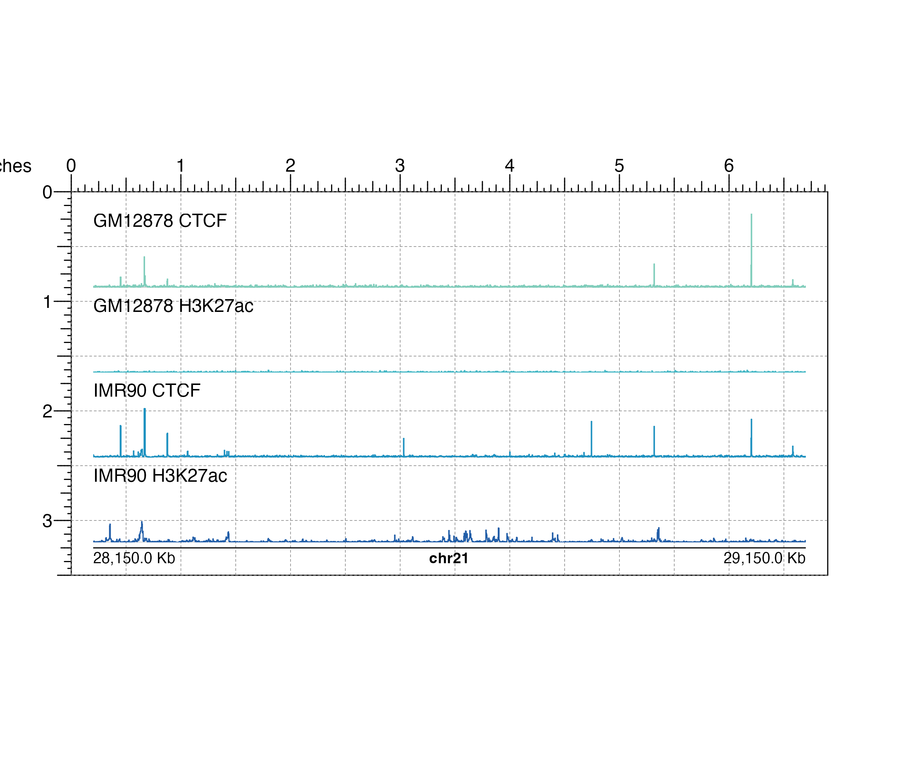
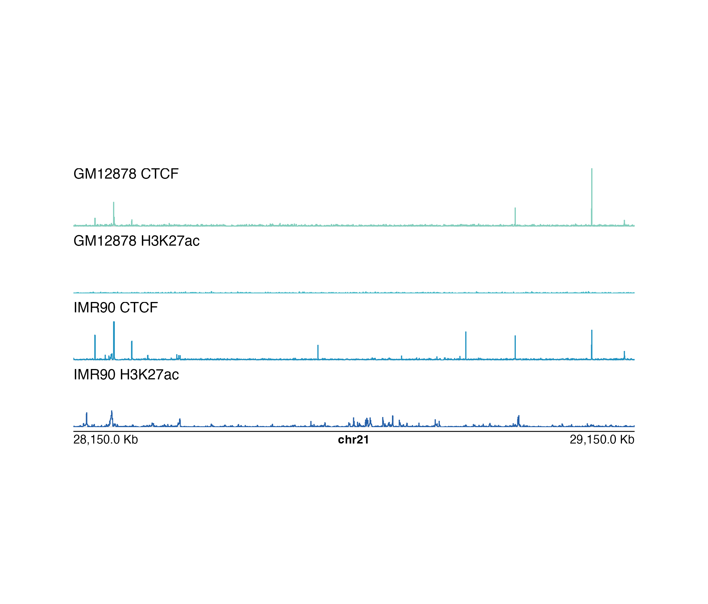

Plot multiple signal tracks in line with each other
plotMultiSignal(
data,
binSize = NA,
binCap = TRUE,
negData = FALSE,
chrom,
chromstart = NULL,
chromend = NULL,
assembly = "hg38",
linecolor= "#37a7db",
fill = NA,
ymax = 1,
range = NULL,
scale = FALSE,
label = NULL,
bg = NA,
baseline = TRUE,
baseline.color = "grey",
baseline.lwd = 1,
orientation = "h",
x = NULL,
y = NULL,
width = NULL,
height = NULL,
just = c("left", "top"),
gapdistance = .2,
default.units = "inches",
draw = TRUE,
params = NULL, ...
)List of data to be plotted as character values specifying
multiple bigwig file paths, dataframes in BED format, or
GRanges objects with metadata column score.
A numeric specifying the length of each data
bin in basepairs. Default value is binSize = NA.
A logical value indicating whether the function will
limit the number of data bins to 8,000.
Default value is binCap = TRUE.
A logical value indicating whether any of the data has both
positive and negative scores and the y-axis of each signal track
should be split. Default value is negData = FALSE.
Chromosome of region to be plotted, as a string.
Integer start position on chromosome to be plotted.
Integer end position on chromosome to be plotted.
Default genome assembly as a string or a
assembly object.
Default value is assembly = "hg38".
A character value or vector of character values specifying
the line color(s) outlining the signal tracks.
Default value is linecolor = "#37a7db".
A character value or vector specifying
the fill color(s) of the signal tracks. Default value is fill = NA.
A numeric specifying the fraction of the max y-value
to set as the height of each plot. Default value is ymax = 1.
A numeric vector of length 2 specifying the y-range
of data to plot (c(min, max)) in each signal track. If range = NULL,
an optimal range for all signal tracks will be calculated.
A logical value indicating whether to include a data
scale label in the top left corner of each plot.
Default value is scale = FALSE.
An optional character vector to conveniently add text labels
to signal tracks. If scale = TRUE, the labels will be drawn in the
top right of the signal tracks. Otherwise, the label will be drawn in the
top left of the plot. For more customizable labels,
use plotText.
Character value indicating background color.
Default value is bg = NA.
Logical value indicating whether to include a
baseline along the x-axis. Default value is baseline = TRUE.
Baseline color.
Default value is baseline.color = "grey".
Baseline line width.
Default value is baseline.lwd = 1.
A string specifying signal track orientations.
Default value is orientation = "h". Options are:
"v": Vertical signal track orientations, where signal tracks
will be stacked from left to right.
"h": Horizontal signal track orientations, where signal tracks
will be stacked from top to bottom.
A numeric vector or unit object specifying the overall multisignal x-location.
A numeric, unit object, or character containing a "b" combined with a numeric value specifying overall multisignal plot y-location. The character value will place the multisignal plot y relative to the bottom of the most recently plotted plot according to the units of the plotgardener page.
A numeric or unit object specifying overall multisignal plot width.
A numeric or unit object specifying overall multisignal plot height.
Justification of overall multisignal plot relative to
its (x, y) location. If there are two values, the first value specifies
horizontal justification and the second value specifies vertical
justification. Possible string values are: "left", "right",
"centre", "center", "bottom", and "top".
Default value is just = c("left", "top").
A numeric or unit object
specifying space between plots. Default value is gapdistance = 0.2.
A string indicating the default units to use
if x or y are only given as numerics.
Default value is default.units = "inches".
A logical value indicating whether graphics output should be
produced. Default value draw = TRUE.
An optional pgParams object containing relevant function parameters.
Additional grid graphical parameters. See gpar.
Returns a list of signal objects containing relevant
genomic region, placement, and grob information for each signal
track.
library("plotgardenerData")
data("GM12878_ChIP_CTCF_signal")
data("IMR90_ChIP_CTCF_signal")
data("GM12878_ChIP_H3K27ac_signal")
data("IMR90_ChIP_H3K27ac_signal")
library("RColorBrewer")
## List of multiple signal datasets
signalList <- list(GM12878_ChIP_CTCF_signal, GM12878_ChIP_H3K27ac_signal,
IMR90_ChIP_CTCF_signal, IMR90_ChIP_H3K27ac_signal)
## Create page
pageCreate(width = 6.9, height = 3.5, default.units = "inches")
## Plot multiple signals
multisignal <- plotMultiSignal(signalList, chrom = "chr21",
chromstart = 28150000, chromend = 29150000,
linecolor = c(brewer.pal(n = 9,"YlGnBu")[4],
brewer.pal(n = 9,"YlGnBu")[5],
brewer.pal(n = 9,"YlGnBu")[6],
brewer.pal(n = 9,"YlGnBu")[7]),
label = c("GM12878 CTCF", "GM12878 H3K27ac",
"IMR90 CTCF", "IMR90 H3K27ac"),
assembly = "hg19",
x = 0.2, y = 0.2,
width = 6.5, height = 3,
default.units = "inches",
gapdistance = 0.1)
#> multisignal[multisignal1]
## Plot genome label
plotGenomeLabel(
chrom = "chr21",
chromstart = 28150000, chromend = 29150000,
assembly = "hg19",
scale = "Kb",
x = 0.2, y = 3.25, length = 6.5,
default.units = "inches"
)
#> genomeLabel[genomeLabel1]

## Hide page guides
pageGuideHide()
